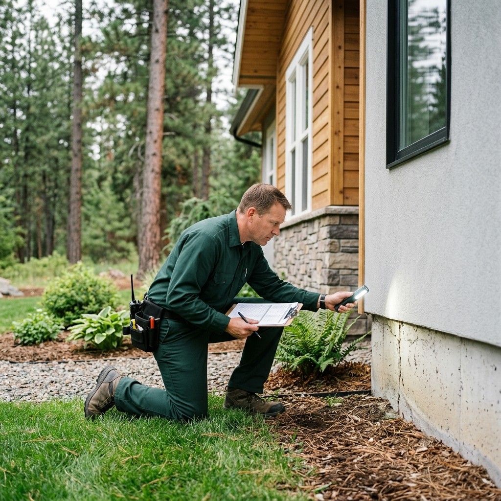
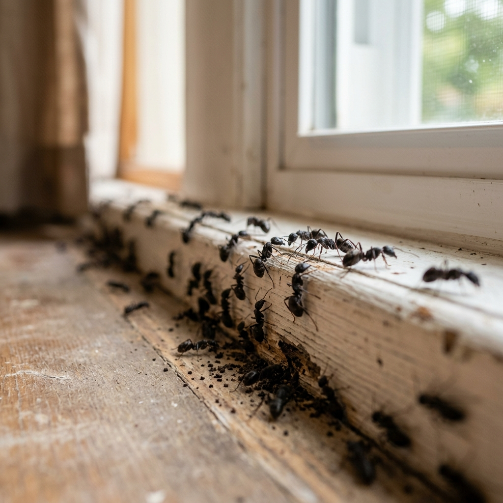
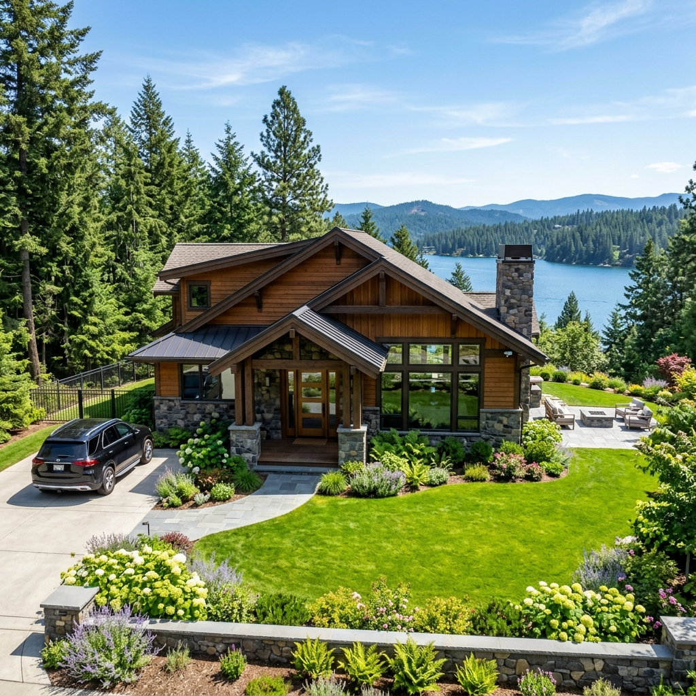
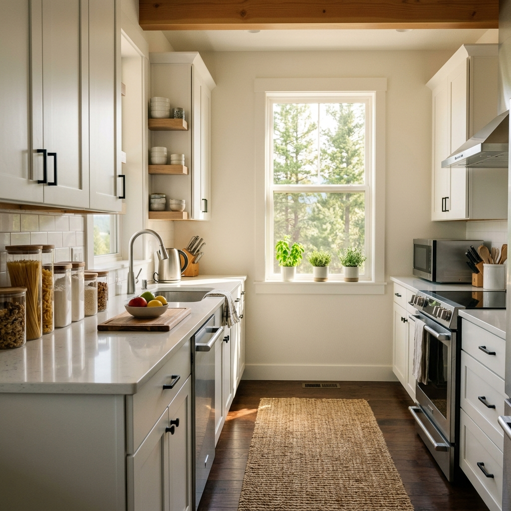
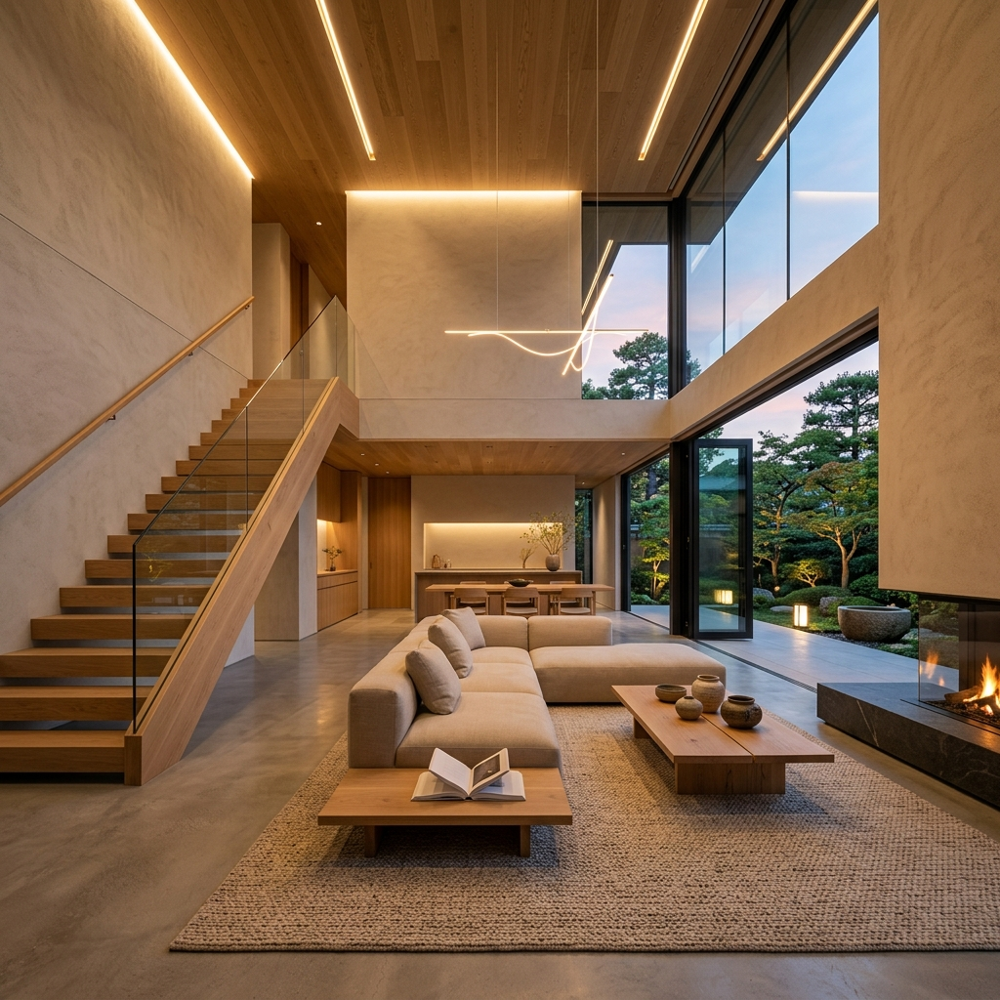
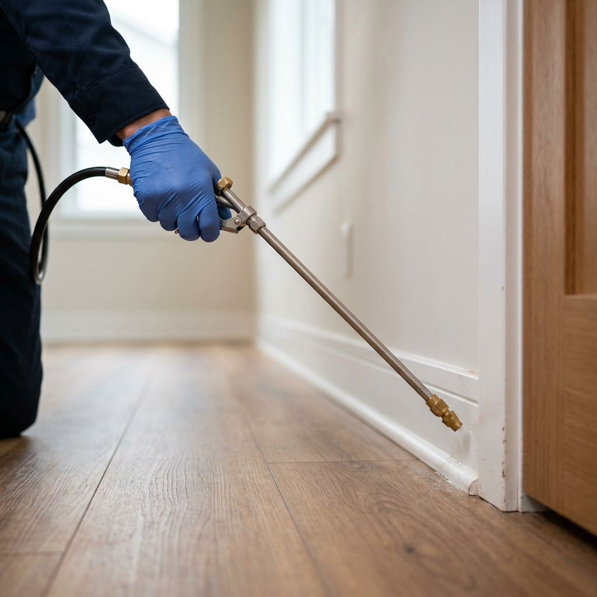
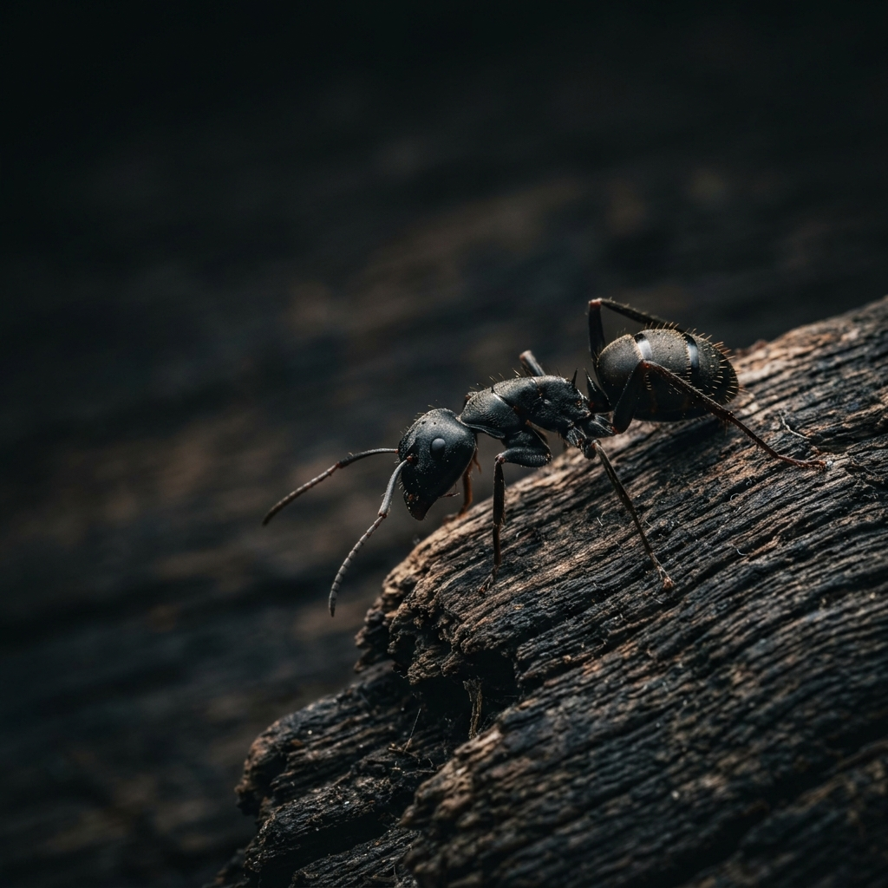

Ants show up fast. One line on your kitchen counter can turn into twice as many by the next morning. Homes near Lake Coeur d'Alene deal with this a lot. The water keeps the ground wet nearby. Wet ground gives ants an easy path indoors. We provide ant control in Coeur d'Alene. We track down where the ants are coming from. We treat the source, not just the ants you see on the surface.

We help homes in Coeur d'Alene stay free of ants. We work all over the area, from downtown to Canfield Mountain. When the weather changes, ants change too. Before we treat anything, we look for how the ants are getting in. Once we find the nest, we treat it there so the ants stop coming back.
What attracts ants to homes around Lake Coeur d'Alene?
Ants need water and food, and properties near the lake give them both. Damp soil near a foundation, leaky pipes, and wooded lots all give ants a place to nest close to a house. Once ants find a steady food source inside, like sugar or crumbs left out, they leave a scent trail that guides more of them back to it.
That same approach, inspect first and go after the actual cause, is exactly what our ant control service here is built on. Here is what it includes.

We put gel bait and insecticide right where ants travel inside your home, in cracks, corners, kitchens, bathrooms, and window sills. The product reaches the colony, not just the ants you can see on the counter.

Most ant colonies start outside the home before they ever come in. We apply a control spray to the soil, mulch beds, and home perimeter to stop ants before they reach your foundation. This keeps the yard, garden, and flower beds protected along with the house itself.

Spraying the ants you see does not solve the problem if the colony and queen are still active underground or inside a wall void. We use bait formulas that worker ants carry back to the nest, which reaches the queen and the rest of the colony over time.

After the first visit, we show you where ants got in, gaps around windows, cracks in the foundation, spots like that. Then we put down a barrier around the house. It helps keep new ants from moving in later in the season.
Homeowners keep calling us back for a few plain reasons.
We explain what we found during the inspection and what the treatment plan involves before we start, in plain language, not sales talk.
Our technicians show up on time, answer your questions, and treat your home the way they would want their own home treated.
We do not guess at the species or the entry point. We look for it.
A clear process, so you always know what to expect and why.
We walk the inside and outside of your property to find where ants are entering, where they are nesting, and what is drawing them in.
Different ant species respond to different treatments, so we identify the species before we choose a method.
We apply bait, spray, or crack and crevice treatment based on what the inspection shows, targeting the colony instead of just the trail.
We point out entry points and offer barrier protection to help keep new colonies from moving in.
Do you inspect crawl spaces and attics for ants?
Yes. Ants often nest in places homeowners cannot see easily, including crawl spaces, attics, and wall voids. A full inspection covers these areas along with the kitchen, bathrooms, and home perimeter, since a nest hiding out of sight is often the real reason ants keep coming back.


Ant trails near food or water sources, especially around sinks, dishwashers, and pet food bowls.
Winged ants indoors, which usually means an established colony nearby is starting a new one.
Small piles of dirt or debris near foundations, window sills, or walkways.
More activity after rain, since ground moisture pushes colonies to look for drier space, sometimes inside a home near Tubbs Hill or other wooded parts of town.
Can leaky pipes cause ant infestations in CDA homes?
Yes. Ants are drawn to moisture as much as food, so a leaky pipe under a sink or a damp crawl space can be enough to draw a colony indoors. Fixing the leak on its own will not remove an existing colony, but it does remove one of the reasons ants keep coming back.
Most people don't know how interesting ants really are.
A single colony can include thousands of worker ants, all working for one queen.
Ants leave a scent trail called a pheromone trail so other workers can follow the same path back to a food source.
Worker ants are all female. Male ants exist mainly to mate with a new queen.
Ants do not go away on their own, and the longer a colony sits, the more it spreads. From downtown near McEuen Park to the streets up by Canfield, we can come take a look and tell you exactly what is going on. Call (208) 248-2701 or fill out our quote form to schedule your ant inspection.